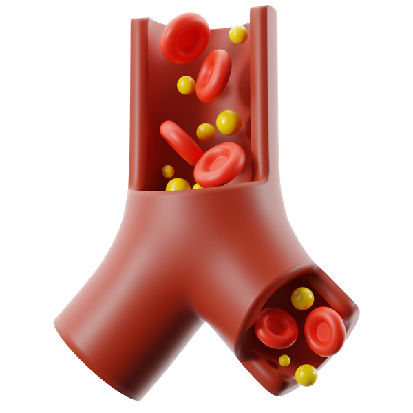
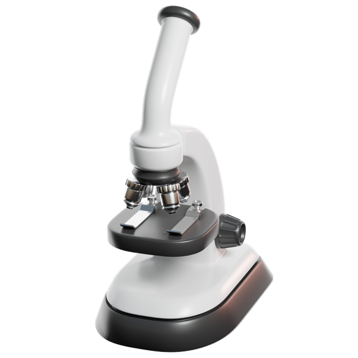

Envie a foto ou o PDF do seu hemograma e entenda, em palavras simples, o que cada valor significa.

Seu hemograma, explicado sem complicação
Como funciona
Três passos, sem cadastro.
-
Envie o exame
Tire uma foto nítida ou envie o PDF do seu hemograma. Antes, confira se não aparece seu nome ou outros dados pessoais.
-
A IA lê os valores
O ExamIA compara cada valor com a faixa de referência que vem no próprio exame.
-
Receba a explicação
Você vê cada item em palavras simples, com um selo mostrando se está dentro ou fora da referência. Leve suas dúvidas ao médico.
O que o ExamIA
não faz

- Não dá diagnóstico. Ele explica o que os valores podem indicar. Quem diagnostica é o médico.
- Não substitui a consulta. Se algum valor estiver fora da referência, leve o exame a um profissional de saúde.
- Não guarda o seu exame. O arquivo é usado só para gerar a explicação e não fica salvo no site. Mesmo assim, não envie exames com seu nome ou dados pessoais.